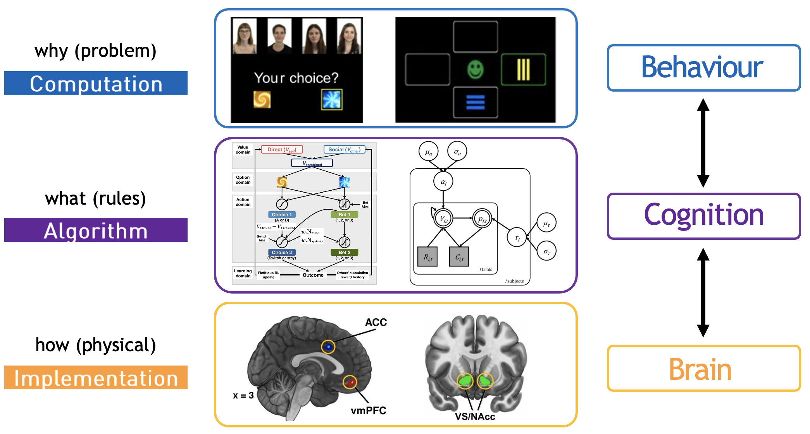
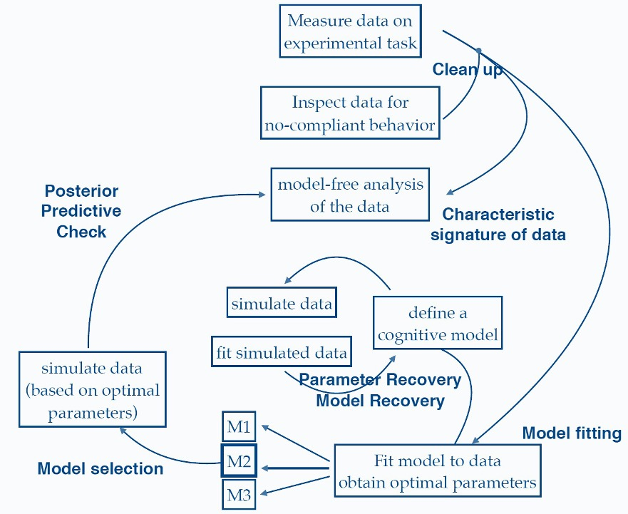
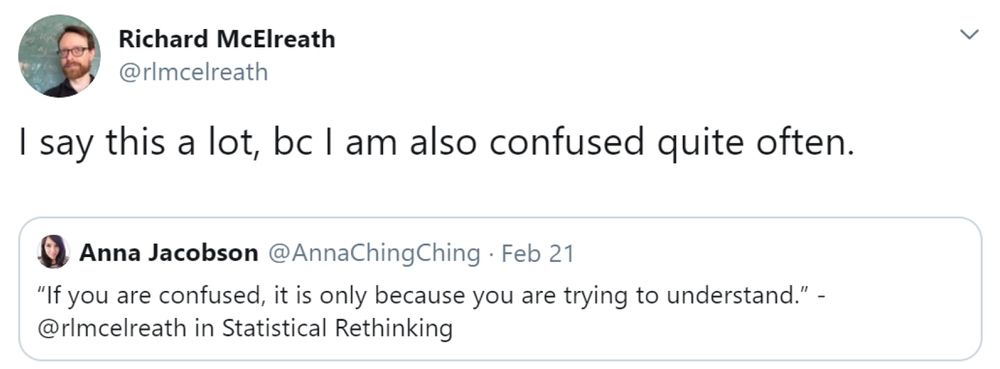

Course overview
Who this course is for and how to get the most out of it
Aims and philosophy
This course was initially developed for master’s students at the University of Vienna, but is intended for anyone interested in learning about Bayesian statistics, and using Bayesian methods to both build and apply cognitive models. As a result, students at all levels, postdocs, as well as senior faculty have completed this course!
The term ‘Bayesian’ is not limited to modeling, and reflects a more general approach to probability observed in many research areas. Therefore, to avoid confusion beforehand, this course is not about ‘Bayes in the brain’ (Bayesian brain hypothesis), or why Bayesian statistics is a better alternative to frequentist statistics (even though it is).
Instead, this course aims to develop understanding and experience in using Bayesian statistics to analyse cognitive processes by constructing models.
The course’s approach to understanding cognition through modeling is guided by David Marr’s influential framework of three levels of analysis1:
The Computational Level (Why): This addresses what problem the cognitive system is trying to solve and why. It focuses on the goals and logic of the computation.
The Algorithmic Level (What): This specifies the representation and algorithm used to solve the computational problem. It describes the rules and strategies that implement the solution.
The Implementation Level (How): This details how the algorithm is physically realized in neural circuits and brain structures.
Throughout this course, we’ll use cognitive modeling as a bridge between these levels, particularly focusing on how algorithmic-level models can help us understand behaviour:

Marr’s framework as applied to cognitive modeling
The goals of this course are to:
- Build a foundational knowledge in cognitive behaviour and model-building
- Learn practical
Rprogramming - Build cognitive models using RStan
- Engage in open-source methods using
gitand GitHub (optional)
Subsequently, after completing the course, you …
- feel comfortable with reading mathematical equations
- consider the implementation of the “computational modeling” section when reading scientific articles
- gain insightful understanding of Bayesian statistics and modeling
- can apply computational modeling in your own experiments
This course particularly places a strong emphasis on hands-on experience modeling in Stan, gaining experience with the modeling workflow depicted below2:

You will learn to implement parameter and model recovery, perform posterior predictive checks, and assess competing models using model selection. Don’t worry if none of this is currently familiar; hopefully it will be after completing this course!
Pre-requisites
To fully benefit from the materials, you are expected to have:
- Some basic understanding of frequentist statistics
- Some basic knowledge of programming
Any advanced knowledge of programming or statistics, whilst useful, is not required!
The course develops in complexity across the workshops, with the later material on hierarchical models and model optimization being more challenging. However, do not feel as if you need to complete all workshops within a specific time-frame! These materials should consist part of your education in cognitive modeling.
As a course in statistics and mathematical modeling, math equations feature throughout, albeit sparingly. Understanding the mathematical equations underlying computational models is necessary for understanding the relationship between data and parameters. However, some sections of the course feature additional math (e.g., derivations, statistical distributions) which are not strictly necessary to understand. As a general rule of thumb, most important is that you try to understand the equations describing your data and parameters, and how they are represented mathematically!
In any case, do not worry if you struggle during the course!

List of folders and contents
The materials for the workshops are split across sub-folders within /workshops:
| Folder | Task | Model |
|---|---|---|
| 01.R_basics | NA | NA |
| 02.binomial_globe | Globe toss | Binomial Model |
| 03.bernoulli_coin | Coin flip | Bernoulli Model |
| 04.regression_height | Observed weight and height | Linear regression model |
| 05.regression_height_poly | Observed weight and height | Polynomial regression model |
| 06.reinforcement_learning | 2-armed bandit task | Simple reinforcement learning (RL) |
| 07.optm_rl | 2-armed bandit task | Simple reinforcement learning (RL) |
| 08.compare_models | Probabilistic reversal learning task | Simple and Fictitious RL models |
| 09.debugging | Memory Retention | Exponential decay model |
| 10.model_based | WIP | WIP |
| 11.delay_discounting | WIP | WIP |
In addition to following along with the taught material, there are a number of exercises that you can work through. The code and solutions to the exercises in some cases will be worked through, but will not in others. In all cases however, the materials to work through the exercises are provided.
Specifically, each folder above will typically have the two sub-folders: _data and _scripts. Each _scripts folder will also contain separate files with and without the master suffix.
├── R_basics.Rproj
├── _data
├── _scripts
│ ├── R_basics.R
│ └── R_basics_master.RThe base script will contain the necessary code without the solutions, whilst the master script also contains the solutions.
Whilst the structure of the workshops on this website does not exactly match those in the folder, details on which scripts and data to use is always given.
You do not have to work through the exercises to benefit from and complete this course, but is recommended if you are wanting to gain practical experience with programming in Stan!
Set-up
There is no additional set-up needed if you aim to work solely from the website. However, to run the analyses on your computer, several software and packages must be installed.
Software
R packages
In addition to software, various analyses across the workshops require specific packages to be installed.
This project uses renv to manage package dependencies. To set up the environment:
- Install
renv:install.packages("renv") - Open the project in
RStudio - Run
renv::restore()to install all required packages
After this initial setup, the project environment will load automatically whenever you open the project.
You can always check if you are missing a certain package by clicking on the ‘Packages’ tab (next to Files/Plots tab) or by running library().